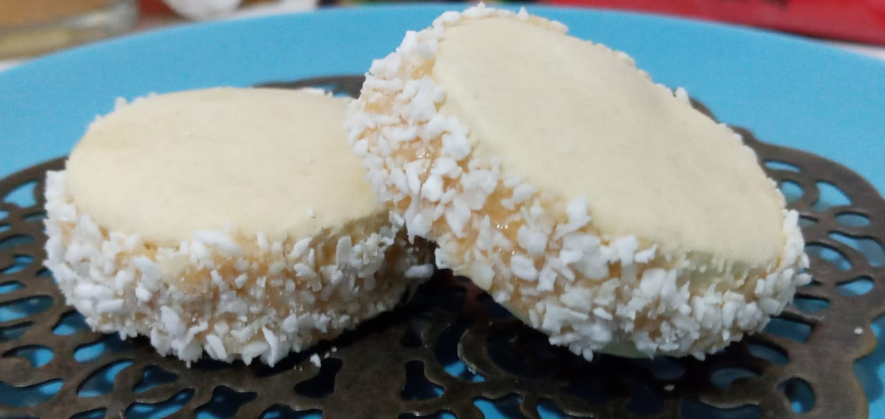

Alfajores
Argentinos
Autor: Karen Gallardo
Alfajor (em castelhano "alfajor" [alfa'xor]) é um doce tradicional da Espanha, Argentina, Chile, Peru, Uruguai e outros países ibero-americanos, O nome vem do árabe al hasu e significa recheado.
Tempo de preparo:
"45 minutos"
Rendimento:
"10 porções"
Ingredientes:
- 100g margarina ou manteiga.
- 100g açúcar refinado.
- 1 ovo, ½ ovo y 1 gema.
- 5g de esencia de baunilha.
- ¼ colher (chá) de sal
- 1/8 de colher (chá) de fermento em pó.
- 100g de farinha de trigo
- 200g de amido de milho Maizena©
- 300g Doce de leite
- 150g Coco ralado
Modo de preparo:
- Preaqueça o forno em temperatura média 180ºC.
- Unte e enfarinhe 2 assadeiras retangulares grandes (40 X 28 cm). Reserve.
- Em uma tigela grande coloque a manteiga ou margarina e bata com a batedeira até virar creme, acrescente o açúcar e mexa até ficar tudo junto.
- Acrescente os ovos e mexa até ficar homogêneo
- Coloque a baunilha aos poucos
- Peneire o amido de milho MAIZENA©, a farinha, a sal e o fermento em pó e acrescente aos poucos na nossa massa.
- Amasse com a ponta dos dedos até que a massa fique homogênea e solte das mãos.
- Enfarinhe uma superfície seca e abra a massa com o rolo na espessura de 0,5 cm. Com o cortador de biscoitos (5 cm de diâmetro), corte a massa em 50 biscoitos e distribua-os nas assadeiras reservadas.
- Leve-os ao forno por 15 minutos ou até dourarem levemente. Reserve até esfriar.
- Espalhe em metade dos biscoitos uma pequena porção do recheio e una cada um deles com outro biscoito e aperte até deixar sair um pouco do recheio nos lados.
- Coloque o coco ralado dos lados onde está se saindo o recheio.
Dicas
O biscoito deve ficar claro, portanto, para verificar o cozimento, observe se a parte de baixo está corada. Para presentear, embale os alfajores em papel celofane colorido e coloque-os em pequenas cestas ou caixas coloridas. Se preferir, utilize a boca de um copo (5 cm de diâmetro) para cortar os biscoitos.